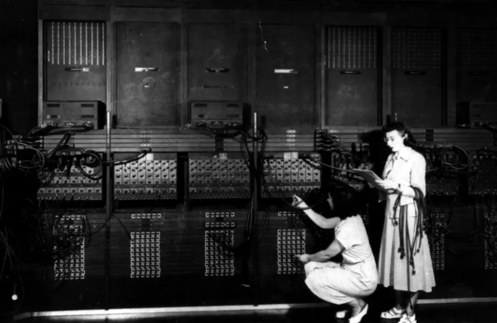
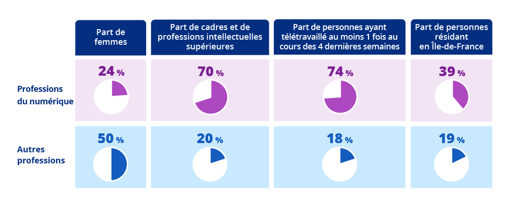

Les femmes et l'informatique
Comprendre leur place dans le numérique, redécouvrir celles qui ont façonné son histoire.
Explorer leur histoire →
Pourquoi si peu de femmes dans l’informatique ?
Le numérique est un secteur en pleine expansion, mais les femmes y sont encore sous-représentées. Selon l’Insee, elles ne représentent que 28 % des effectifs dans le secteur du numérique en France. Cette situation soulève des questions sur les causes de cette disparité et sur les moyens de la réduire.
